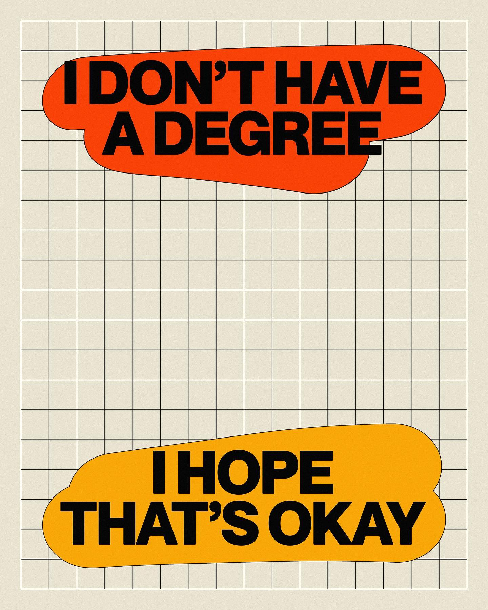

Elliot Ulm: a graphic design case study
Elliot is a graphic designer who is popular for sharing his typographical designs on YouTube and Instagram.
Designs by elliotisacoolguy
His designs feature bold typography and highlight warm colors and soft shapes contrasted against sharp type.
Contrast

elliotisacoolguy: June 13, 2023
Contrast is about making elements stand out from each other--high contrast in color, size, shape, texture, or similar properties can produce higher viewer engagement, point to a focal, or aide visual hierarchy.
This design highlights this principle by contrasting the black type with white type, the soft shape of the color blob against the sharp edged, blocky type, and the splash of vibrant color against the white background.
Repetition
elliotisacoolguy: December 22, 2023
Repetition is about the use and reuse of visual elements throughout a design. It helps create unity, coherence, and a sense of familiarity with a design. By using repetition in a design, the viewer is likely to feel more comfortable with a piece, especially in a series of designs.
This design highlights this principle by maintaing a consistent design throughout all the pages, creating familiarity with the design and the comfort of knowing what to expect. One interesting thing to note is the repetition used with the text in the lower left corner, which is different on the first page than the following three pages, but the design of the text remains the same visually.
Alignment

elliotisacoolguy: June 20, 2023
Alignment is about the placment of elements on an common line or underlying grid. Alignment can help create a strong visual hierarchy, and a pleasingly organized, professional looking design. Good alignment can also help with clarity and readability, which is good for the accessibility of a design.
This design makes use of alignment by keeping a consistent margin on all sides of the design, as well as aligning the smaller text elements and shapes with the height and spacing of the larger text elements of the design. There is a rhyme and reason to the alignment of the elements of this design, even if it appears at first to be random. The design would look discordant, jumbled and messy if the elements were truly completely random.
Proximity

elliotisacoolguy: December 16, 2023
Proximity is about the spatial relationships between elements. The proximity of elements creates a visual connection by showing how related two elements are by how close they are in proximity to each other.
This design makes use of proximity and unity to show how the two main text elements are unified in their ideas and go together by using the same font and font size, while showing they are about separate ceoncepts by putting a lot of distance between the two elements.
Color

elliotisacoolguy: October 20, 2023
Color is used to elicit emotions and create visual interest in a design. Understanding color theory, including principles like complementary colors, analogous colors, and color harmony, allows designers to make color choices that can determine the emotional and visual effectiveness of their designs.
Color is utilized in this design to generate interest in the design. Without the color blocks, all that's left is a block of gray with black text over it. The color creates interest and breaks up the monotony of a monotone color palette
Closing remarks
elliotisacoolguy: January 31, 2023
If you'd like to see more from Elliot, you can find him on Instagram, or go on a design journey with him on YouTube